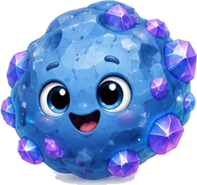
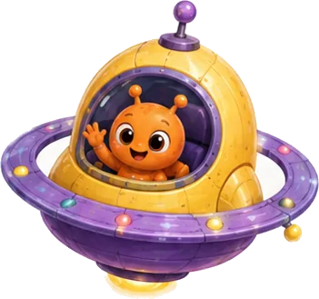
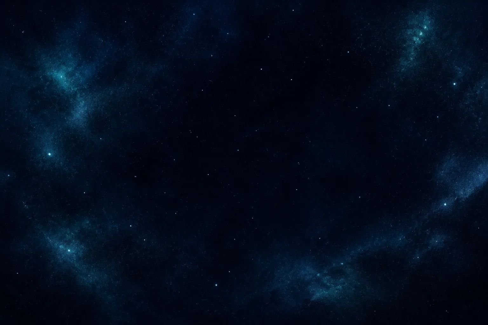
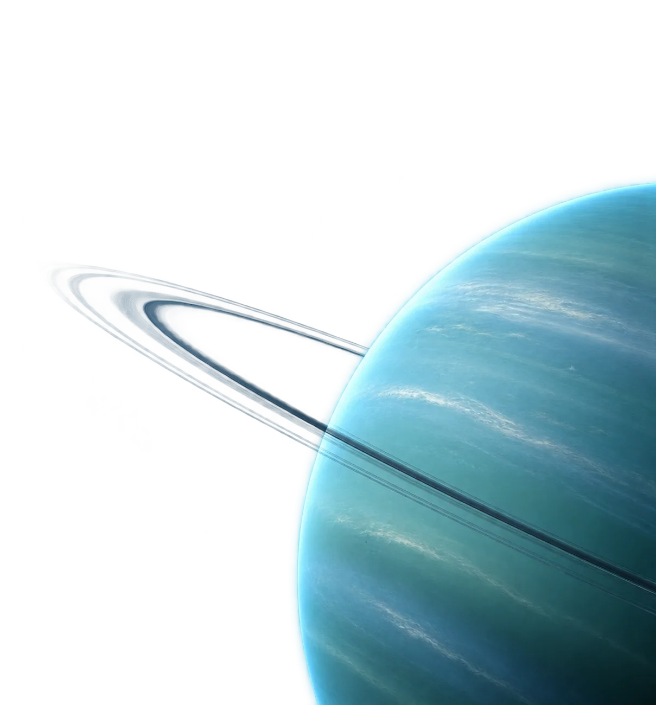
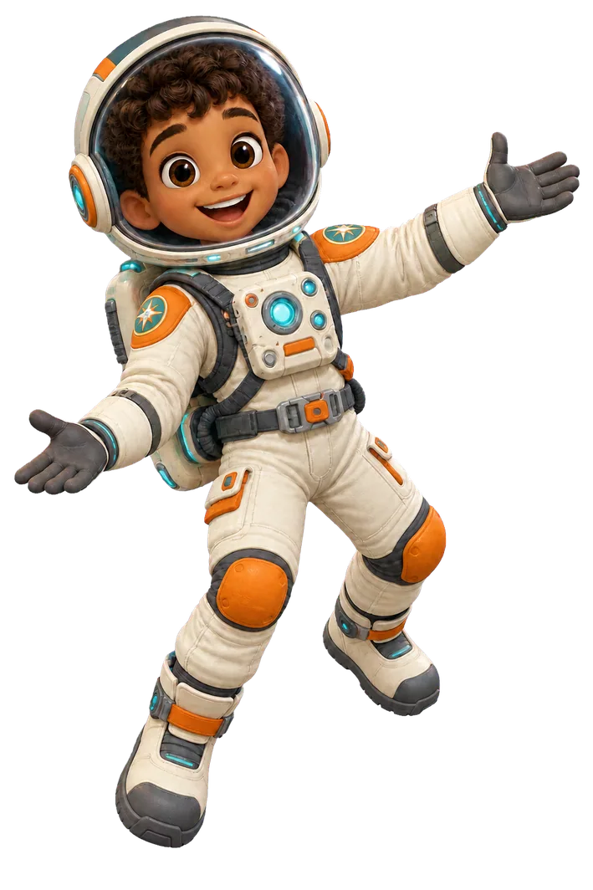
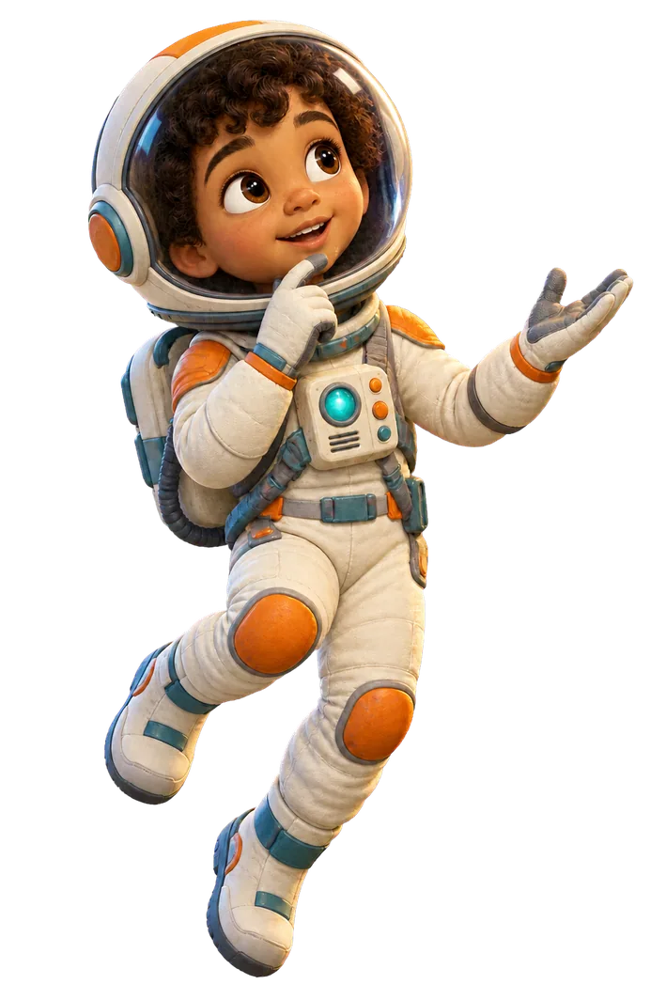
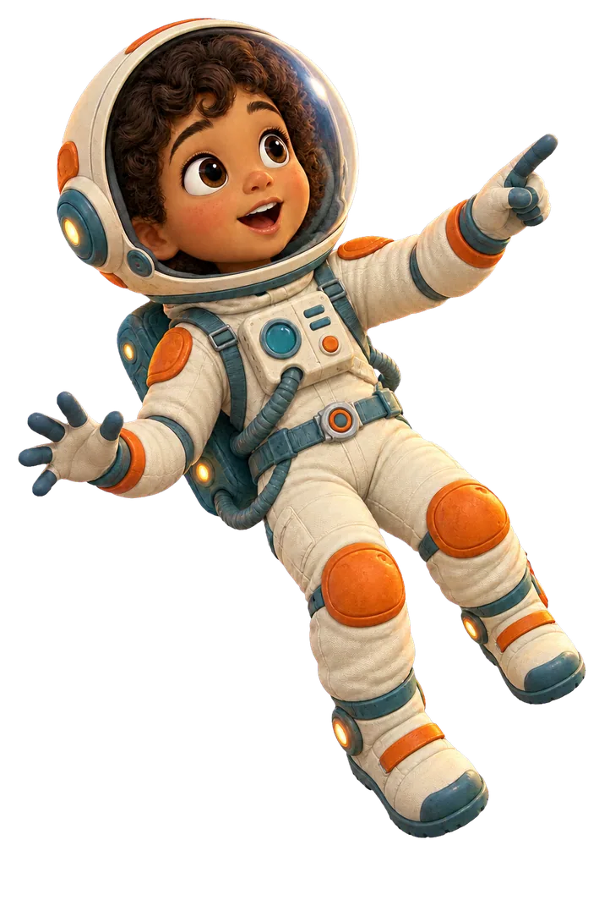
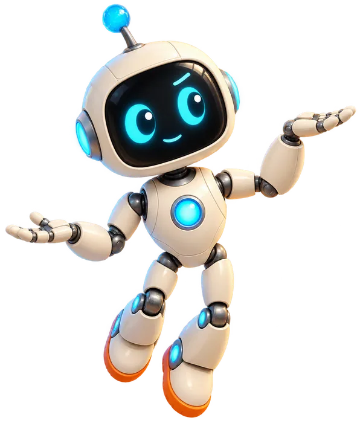
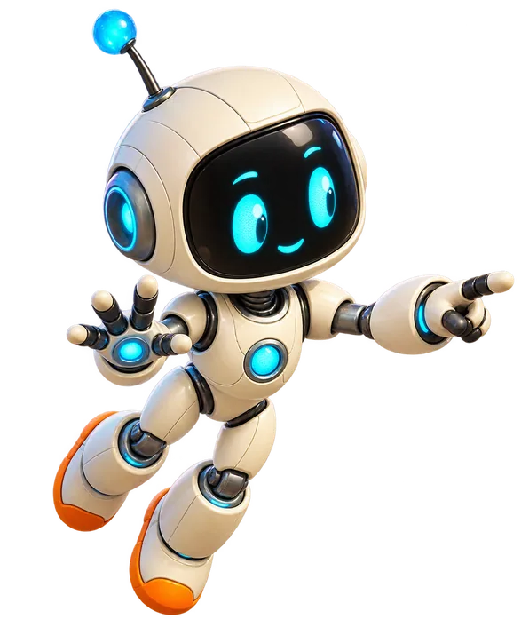
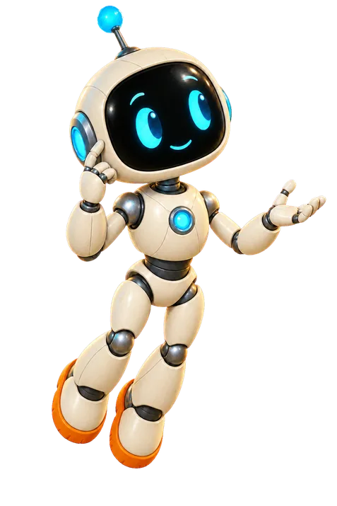

Page 16 · The literary moons
Five moons, five stories
Miranda, Ariel, Umbriel, Titania, and Oberon circle Uranus. Their names come from literature, and each moon carries a different record written across its icy surface.


Tap a sparkling star on any page to meet a space friend and keep their sticker.

Miranda, Ariel, Umbriel, Titania, and Oberon circle Uranus. Their names come from literature, and each moon carries a different record written across its icy surface.







Drawings, not photographs. Not to scale.
Tap the diagram to replay its motion. Diagrams are explanatory and not to scale.